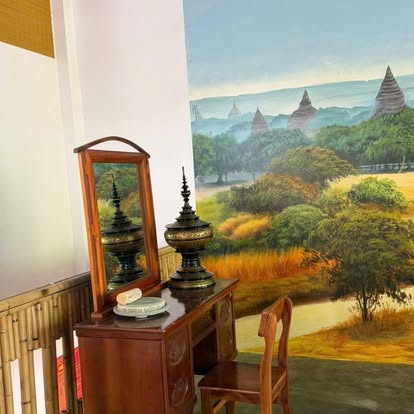
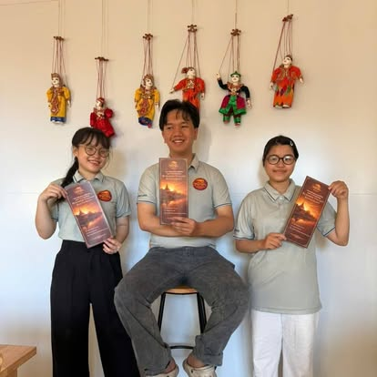
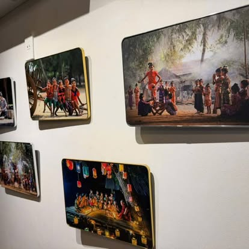
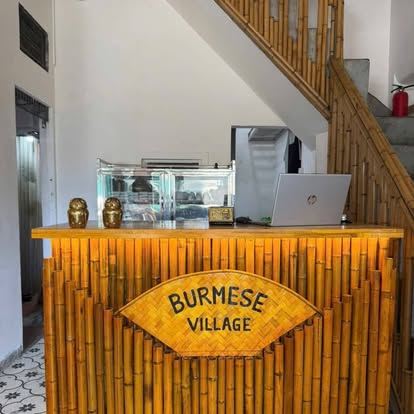
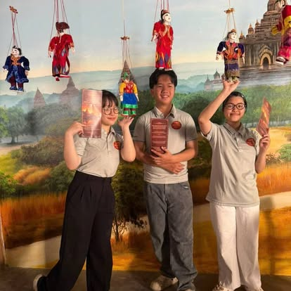
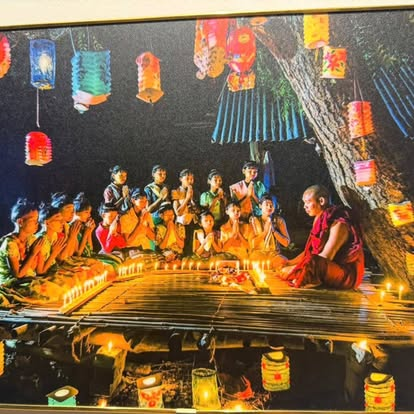
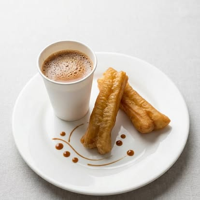
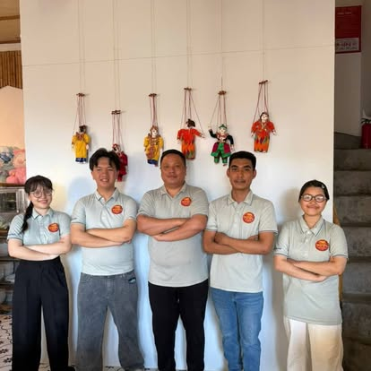
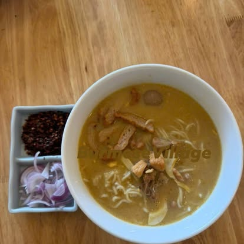

The thanaka corner
An antique dressing table with a kyauk pyin grinding stone and lacquered hsun ok — set against a hand-painted mural of the Bagan plains.
မင်္ဂလာပါ · Mingalarbar · Xin chào
A cozy place for the authentic taste and traditional vibe of Myanmar — mohinga ladled hot in the morning, curry around rice at noon, and sweet milk tea whenever you need it.
39 Phạm Hồng Thái · Hải Châu Serving daily until 9 PM Kitchen closes 8:15 PM
The House
Step past the bamboo blinds and Myanmar is everywhere — not as decoration, but the way a family would keep it.

An antique dressing table with a kyauk pyin grinding stone and lacquered hsun ok — set against a hand-painted mural of the Bagan plains.

Traditional yoke thé marionettes watch over the tables — the same puppets that tell stories at Myanmar festivals.

Framed scenes of lantern nights, village dances and candle-lit prayers hang around the room — every wall tells a story.

A carved bamboo counter, golden roll-up blinds, light-wood tables and patterned tile floors — with a pair of lucky owls keeping watch.
Behind it all, a small crew in cream polos who will remember your tea order by the second visit. လက်ဖက်ရည် တစ်ခွက် သောက်ဦးမလား။

Memories from the Village
Kept like a journal — the moments our Facebook page remembers best.
Blinds hung, mural painted, marionettes on the wall, thanaka corner arranged — and invitations sent out to the whole street.

From 9 AM, the first bowls of mohinga, plates of Nhyat Khauk Swe Thoke, Kyar Zan Hin Khar, and cup after cup of lahpet yay for our first guests.

Full-moon day wishes and Reunification Day greetings — a Myanmar house celebrating with its Vietnamese neighbours.
After a quiet spell with the doors closed, we reopened — and you came from the very first day. That week we began the daily rotation: a new breakfast board every morning, combo sets from noon.

Shan noodles one morning, Nan Gyi Thoke the next; samosas and seasoned yellow peas beside the dough sticks; butter rice with chicken curry as a lunch special. Tomorrow's board is posted every evening.

Village Time
A rotating spread of Burmese classics — mohinga, noodle salads, fried rice, Shan noodles — different every day.
One of up to three mains, fried vegetables, soup, sides and rice around one plate — 100K.
Stir-fried noodles and rice vermicelli join the board for the afternoon and evening.
Kitchen closes 8:15 PM, doors at 9. The last tea is always poured unhurried.
Visit the Village
39 Phạm Hồng Thái
Hải Châu · Đà Nẵng 550000
Serving daily — the board changes every morning.
We love seeing your photos — tag us when you visit.
Good to Know
At 39 Phạm Hồng Thái, Hải Châu, Đà Nẵng 550000 — a few streets from the Hàn River. Open directions in Google Maps.
We serve daily: a rotating Burmese breakfast board in the morning, rice combo sets from 12:00, and stir-fried noodles from 15:00. The kitchen closes at 8:15 PM and doors close at 9:00 PM.
Traditional Myanmar cuisine — mohinga (the national fish-broth noodle soup), Shan noodles, Burmese noodle salads, slow-cooked curries, daily 100K rice combo sets, Burmese milk tea and fried dough sticks. The menu is written in English, Burmese and Vietnamese.
Most dishes are 30–120K VND. Milk tea is 35K, breakfast dishes run 30–80K, the daily rice combo set is 100K, and a crispy whole fried fish for the table is 250K.
There are vegetable stir-fries, fresh salads and plain rice on the everyday menu — tell the team when you order and they'll point out what suits you.
Tomorrow's breakfast board is posted every evening on our Facebook page. You can also call or WhatsApp +84 36 594 4023.